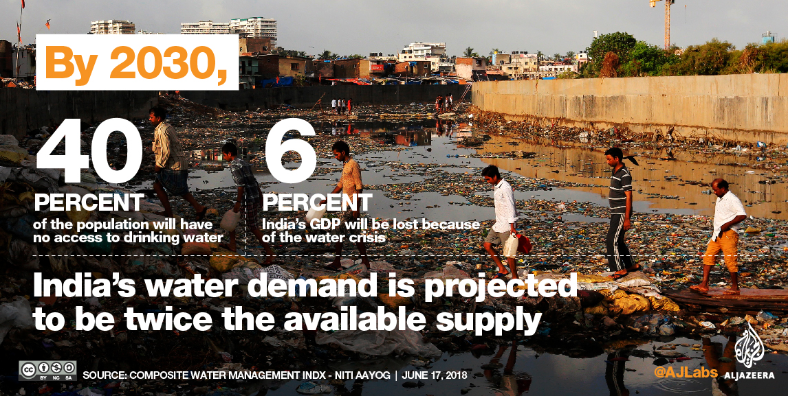

India's Water Crises
Water bodies are important to recharge groundwater and absorb excess rain to prevent flooding Water bodies in India are fast disappearing triggering drought situations and water shortage The significance of restoring or reviving water bodies cannot be overemphasised.
FAST DISAPPEARING WATER BODIES
The apathy towards water bodies is so stark that little is known about their numbers or the state of their use, disuse or abuse either by the Centre or states. The only relevant source of information on water bodies is the minor irrigation (MI) census. According to the 4th MI census, carried out during 2006-2007, there were 5,23,816 water bodies - declining by 32,785 from 5,56,601 water bodies identified during the 3rd MI census of 2000-2001.
People sit around tower for measuring water depth in dried-up Puzhal reservoir, on the outskirts in Chennai | Photo from REUTERS Unhappy at such a state of affairs, the Parliamentary panel pressed for an urgent and exclusive census on water bodies saying that postponing collection of basic information would only delay the process of understanding the gravity of the problem (condition and extent of damage and cause of disuse) and taking remedial measures. But it was not heeded.
REPURPOSING REPAIR, RENOVATION AND RESTORATION SCHEME
Realising the seriousness of problem confronting water bodies, the Centre had launched the Repair, Renovation and Restoration (RRR) of Water Bodies' scheme in 2005 with the objectives of comprehensive improvement and restoration of traditional water bodies, including increasing tank storage capacity, ground water recharge, increased availability of drinking water, improvement of catchment areas of tank commands, etc.
States like Madhya Pradesh, Telangana, Arunachal Pradesh, Rajasthan, Mizoram, Tripura and Odisha said they had built new tanks, check dams, etc under programmes such as MGNREGA to increase the number of water bodies. But the water resources ministry dismissed the panel's suggestion.
Availiabilty of drinking water
Although India has made improvements over the past decades to both the availability and quality of municipal drinking water systems, its large population has stressed planned water resources and rural areas are left out. In addition, rapid growth in India's urban areas has stretched government solutions, which have been compromised by over-privatization.
Regardless of improvements to drinking water, many other water sources are contaminated with both bio and chemical pollutants, and over 21% of the country's diseases are water-related. Furthermore, only 33% of the country has access to traditional sanitation.
Final thoughts
“For every drop of water you waste, you must know that somewhere on earth someone is desperately looking for a drop of water!”